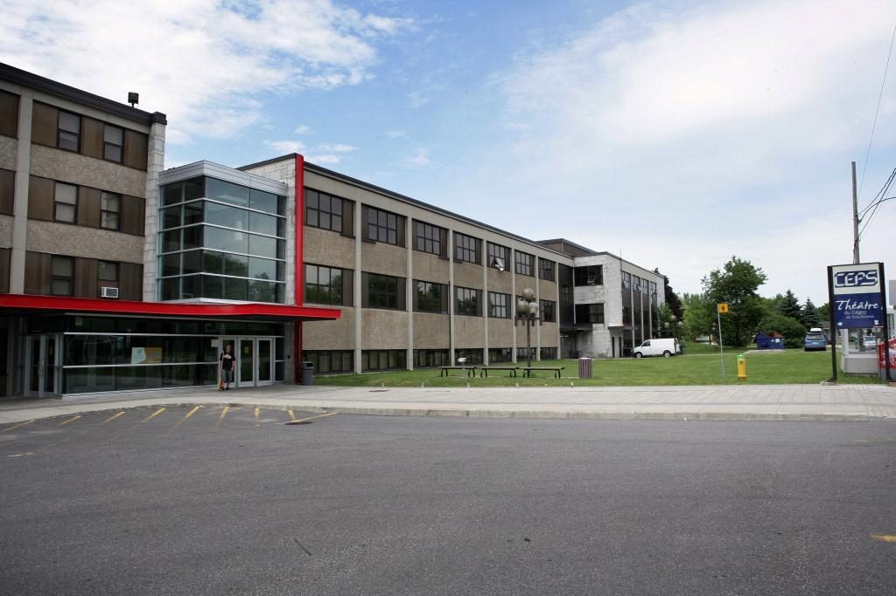

Mes études
J'ai fait un BAC en Design à l'Université Concordia. Je crée des sites web sur Wordpress, à mon compte, depuis trois ans, et j'ai décidé de suivre l'AEC pour accroître mon champ d'expertise et éventuellement trouver du travail en entreprise.

Liste des écoles fréquentées
- École primaire Beaulieu
- École primaire L'Aquarelle
- École secondaire Jeanne-Mance
- Cégep de Drummondville (Arts et Lettres, profil Lettres, cinéma, théâtre)
- UQAM (Cinéma)
- Université Concordia (Design)
- Cégep de Trois-Rivières (AEC Développement Front End)